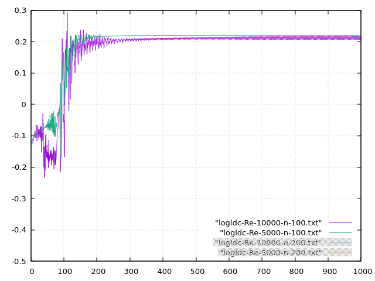
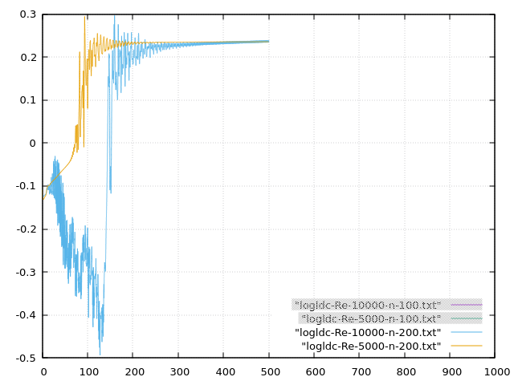

rotst -mode 4 -re 300000 -nx 256 -nz 256 -nt 500000 -dt 2e-4 -lx 1 -lz 1 -saveEachDts 1000 -uniCosMixedGrid 1 1 -regEps 10 1 -dhc 1 -outPsi 1
rotst -mode 4 -re 300000 -nx 1024 -nz 1024 -nt 500000 -dt 2e-4 -lx 1 -lz 1 -saveEachDts 1000 -uniCosMixedGrid 0.5 0.5 -regEps 10 1 -dhc 1 -outPsi 1
Comutation time: 16h
Quick Python setup script
mesh 100x100
Probes of ux at x,y=0.8,0.2 or transpose, one of them; mesh 100x100 generates around 120 fps, mesh 200x200, 25 fps so this could be good for real time sim; script efficiency is wt/nt/nx/nx=5e-7 which is as fast as cpp


mesh 200x200